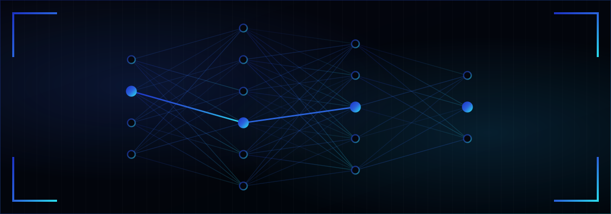

SonarDepthPro
Opens Garmin® RSD sonar recordings on a Windows computer. Designed for files generated by Garmin® devices that have that functionality, so a day on the water can be reviewed properly at the kitchen table. One-time purchase.

VisionFrame builds the future in small packages. Using AI and data analysis, I turn sharp technical know-how into focused, intelligent applications that quietly expand what is possible.
No bloat, no subscriptions, no support tickets that vanish into a queue. One person, one product at a time, sold outright and supported directly by the person who built it.

VisionFrame is run by Peter, a registered sole trader in Sweden. I write desktop applications on my own, release them when they are finished, and answer the support emails myself. There is no large team behind the name and no venture funding, which is exactly the point: the tools stay small, stay specific, and stay maintained.
Everything sold here is my own work. Software is delivered as a simple download and unlocked with a license key issued at purchase, no forced accounts, no recurring subscriptions, and no telemetry.
Just honest software that respects your privacy and gets the job done.
Opens Garmin® RSD sonar recordings on a Windows computer. Designed for files generated by Garmin® devices that have that functionality, so a day on the water can be reviewed properly at the kitchen table. One-time purchase.
Not announced. New tools appear when a real gap turns up in the same territory: desktop utilities for file formats that hardware makers keep locked to their own screens.
Questions before buying, license trouble, or a bug to report: write to support@visionframe.se. Replies usually come within two working days.
VisionFrame · Sole trader registered in Sweden · LinkedIn